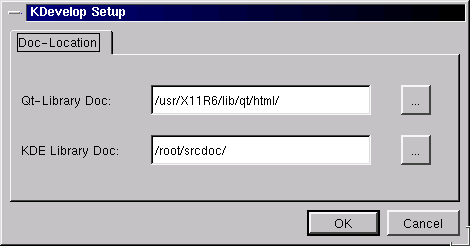
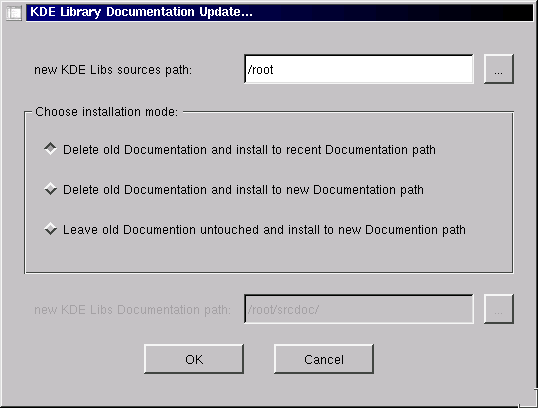

If KDevelop starts for the first time, you get the main window with an empty file/classbrowser and output field. First of all, you should configure KDevelop to give the documetation browser access to the KDE and QT documentation by invoking the setup dialog via "Options"- "Configure KDevelop":

Picture 1: The KDevelop Setup dialog configures the documentation
paths
If you don't have a KDE-libs Documentation, especially if you use current
snapshots, don't worry. Just switch to "Documentation"-"Update KDE-Documentation"
This will offer you the following dialog field, where you have a various
set of options to generate you a Documentation of your recent KDE-libs.

Picture 2: The Update KDE-Documentation dialog- easy and quick
generation of new KDE-libs documentation
Each new project will be created using KAppWizard by "File"- "New Project":

Picture 3: Startpage of the application wizard
KAppWizard leads you through several steps towards creating a frame application which you can work on. When the wizard is finished, files are copied to your development directory and classnames adapted to your application name. Your work starts like this (where KBase is the name of your application):

Picture 3: the working environment after creation of a frame
for the application KBase
As you can see, we already switched to the documentation view of the
Application KBase. It already contains three classes:
- KBaseApp: inherits KTMainWindow and contains the
code for the menubar, toolbar and statusbar and creates instances of the
other classes
- KBaseDoc: inherits QObject as a general
class so it is SIGNAL-SLOT enabled (see QT Documentation). The document
stores all data which it gets from
- KBaseView: inherits QWidget. On itself, it creates
an empty widget which you have to set up by implementing childwidgets or
a complete new widget.
All files can be accessed by clicking on the filename on the left panner- the file opens automatically in the right tab of the right side for editing.
TODO: Go ahead and write a new application for the KDE-project !
You may visit the tutorials about how to expand your frame application to a full-featured KDE-app.
Have fun using KDevelop !!